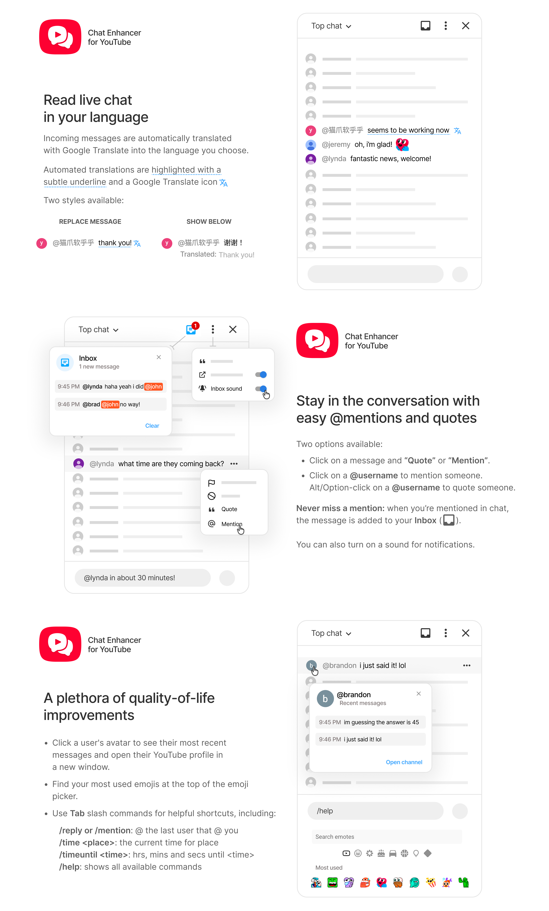

Translate live chat
Choose a target language in the extension popup, then quickly toggle translation from YouTube's live chat settings.
Browser extension for YouTube live chat
Translate messages, mention and quote users, revisit chat context, catch messages you care about, reuse emojis, and run quick commands without replacing YouTube's native chat.
Available now on the Chrome Web Store and Firefox Add-ons.
Built for live streams
Choose a target language in the extension popup, then quickly toggle translation from YouTube's live chat settings.
Use YouTube's message menu, author clicks, profile cards, or slash commands to mention and quote people faster.
Open an avatar card to review a user's recent messages in the current chat and jump to their channel when needed.
Keep a local list of messages that mention your handle or match your keywords, with an optional subtle sound for new inbox messages.
Add a compact row of your most-used emojis to YouTube's emoji picker so common reactions are always close.
Press Tab to expand commands for mentions, quotes, repeated messages, time helpers, and extension settings.
View command referenceScreenshots

Install
Install from the Chrome Web Store or Firefox Add-ons, or build the extension from source for local development. The Chrome version may also work in other Chromium-based browsers.


For private questions, email chatenhanceryt@gmail.com.
Privacy
The extension is designed to keep routine chat enhancements on your device. Translation is the one feature that needs an external service, and it only runs after you choose a target language.
Reference
Type a command in YouTube's chat input, then press Tab.
Commands do not send automatically, and unknown slash commands are
left alone. Use // to send a literal slash command.
Inline commands: /mention, /reply, /time, and /timeuntil can expand inside a sentence.
Whole-input commands: /quote, /again, /repeat, /help, and all /set... commands should be the only text in the input.
/mention or /reply/quote/again or /repeat/time utcutc, tokyo, jst, seoul, kst, london, paris, madrid, newyork, nyc, et, eastern, losangeles, la, pt, and pacific./timeuntil 7:45pm7, 7am, 7 am, 7:45am, 7:45 am, 19, 19:00, 19:00:30, and 7:45:30 pm./help/settranslateto english or /settranslateto off/settranslationdisplay replace or /settranslationdisplay below/setquotelength 120/setsound on or /setsound off/setopenchannelsinpopup on or /setopenchannelsinpopup off